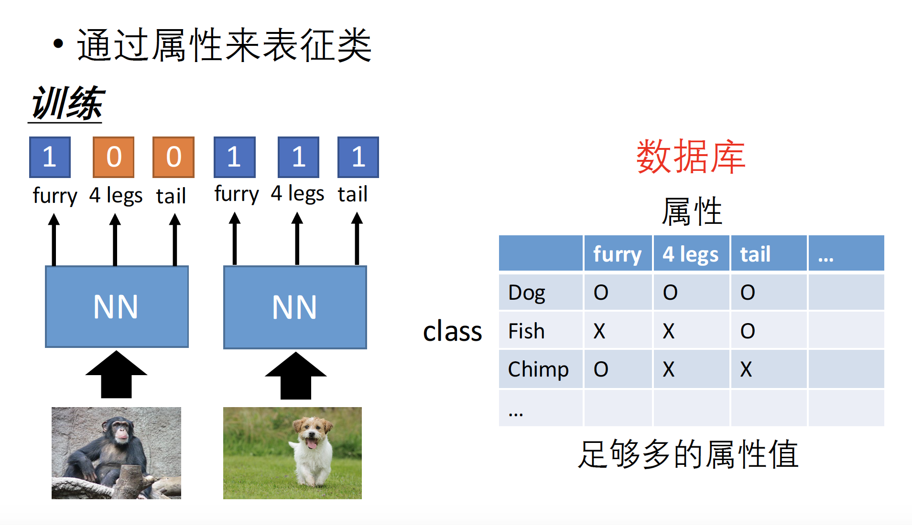

目前，机器学习和深度学习正在如火如荼地发展，而由于迁移学习的思想符合当前的数据发展状况，正在受到人们越来越多的关注：吴恩达曾在2016NIPS turorial中指出“Transfer Learning will be the driver of ML success. ”。
本文将对迁移学习中的基本概念、不同算法的分类、原理与应用做一简要介绍和说明。
迁移学习简介
什么是迁移学习？
简而言之，就是将在一个场景中学习到的知识迁移到另一个场景应用。可以采用迁移学习到原因是当前任务和之前任务可能有某种关联，它们是来自相似domain的不同任务或者不同domain的相似任务。例如：
左侧使用Kaggle上拍摄的猫和狗的图片数据集训练出来的图像分类模型，对拍摄的老鹰和布谷鸟的图片进行分类；右侧使用前述模型对动漫图片形式到猫和狗到图片进行分类。
为什么需要迁移学习？
众所周知，采用机器学习或者深度学习算法可以达到的上限是取决于数据和特征的，而在深度学习领域特征是可以通过数据逐层提取学习到的。
使用深度学习技术解决问题的过程中，最常见的障碍在于，因为模型有大量的参数需要训练，因此需要海量的训练数据作为支撑。在面对某一领域的具体问题时，通常可能无法得到构建模型所需规模的数据。借助迁移学习，在一个模型训练任务中针对某种类型数据获得的关系也可以轻松地应用于同一领域的不同问题。
迁移学习算法一览
根据原始数据和目标数据的标签有无，可以将迁移学习算法分为以下四类。后文主要对有标签到有标签和有标签到无标签的迁移学习算法做主要介绍，无标签到有标签和无标签到无标签到迁移学习算法由于理论上的效果有限且研究较少，只做简要介绍。
| 迁移学习分类 | 原始数据 | ||||||||
| 有标签 | 无标签 | ||||||||
| 目标数据 | 有标签 | model fine-tuning multitask learning |
self-taught learning | ||||||
| 无标签 | domain-adversarial training zero-shot learning |
self-taught clustering | |||||||
有监督到有监督
Model Fine-tune、存在的问题及改进措施
Model Fine-tune的典型应用是把预训练好模型的参数以某种方式借用到到自己的业务场景下，在新的数据集上重新做一次优化，以加速训练过程。
- 任务状况
- 原始数据： 有大量 $(X^s,y^s)$ 数据
- 目标数据：只有少量$(X^t,y^t)$ 数据
- 例子:(有监督学习)电商小类别商品识别
- 源数据：Imagenet多种物体图片识别，有大量数据。
- 目标数据：电商小品类商品图片识别，只有少量数据。
基本思想
- 由原始的Imagenet图像训练一个模型，在自己的数据集上调优。
可能的问题：在小量调优数据上可能过拟合。
- 可能的原因：预训练好的模型参数非常丰富，很容易在目标数据上拟合好，但在用到新的数据上时效果并不好，即出现过拟合。
过拟合处理方式之一：保守训练/Conservative Training
- 常见控制模型的过拟合方式
- 添加正则化项 $L_1$、$L_2$
- dropout随机失活
- 调小学习率，通过迭代轮次限制来控制
其中，添加正则化项的方式启发我们在使用预训练好的模型时，可以限定参数的变动范围，使其不要距原模型的参数过远，即认为原始模型是一个泛化性能很好的模型。定义 $W$为原始模型的参数，定义 $W^{‘}$为在目标数据集学习调整后的模型参数，添加惩罚项 $\lambda||W^{‘}-W||$来控制变动范围，使得两个模型的参数很接近，从而控制新模型不要在小规模数据集上达到过拟合的状态。其中 $\lambda$为模型的超参数。
另外一种控制过拟合的方式是通过控制原模型和新模型的输出来实现，即目标数据在通过原模型时会有一个输出值$Y$，通过新模型时也会有一个输出值$Y^{‘}$,二者都是概率向量 ，添加惩罚项 $\lambda||Y^{‘}-Y||$来控制变动范围，本质上也是约束权重$w$的变化范围。其中 $\lambda$为模型的超参数。
过拟合处理方式之二：层迁移 / Layer Transfer
最原始的Layer Transfer方式是把预训练模型的参数全部导入新的目标任务中，在此基础上通过目标数据集进行下一步的调整。而为了控制过拟合，通常有以下几个trick可以使用。
- 目标数据量很小的情况：拷贝部分层参数到新模型网络参数中且fiexd住，使其不可学习；剩余的层采用random随机初始化的方式且是可学习的。而又由于需要适应原始层的参数要求，就使得random层参数的变动范围也是可控的。
- 目标数据量足够大，可以把原先fixed住的一些层放开来，但是要设定一个小的学习率，如0.0001，因为此时较不容易过拟合。
- 这时又会存在一个问题，我们应该拷贝（复用）哪些层呢？需要结合具体的业务领域知识做出选择。
- 语音识别：通常是复用最后的一些层。原因：不同人的说话方式不同，需要把不同人说话方式抽象成语音的基本单元，而说话的内容都是由这些语音的基本单元构成的，是固定通用的。所以需要通过识别speaker的说话方式，抽象成语音的基本单元来完成speaker的语音识别。
- 图像分类：通常是复用开始的一些层。原因：通常图像识别使用最多的模型是CNN，而在前面的Layer做的任务主要是从底层的像素中逐层提取线条、纹理等上层抽象的理解，而这些基本元素在不同图像中的差别不大。故可以fixed住这些特征抽取器，在这些特征的基础上再进一步的学习不同业务的分割超平面。
- 一般情况下，会复用连续的开始层或者结束层，而不会采用跳变的方式。
- 语音识别：通常是复用最后的一些层。原因：不同人的说话方式不同，需要把不同人说话方式抽象成语音的基本单元，而说话的内容都是由这些语音的基本单元构成的，是固定通用的。所以需要通过识别speaker的说话方式，抽象成语音的基本单元来完成speaker的语音识别。
Multitask Learning
多任务学习（Multitask Learning）和模型再训练（Model Fine-tune）的区别主要在于Model Fine-tune只专注于在目标数据集上的效果，而Multitask Learning的目标要达到在原始任务和目标任务上效果的双赢。这通常通过组合不同的网络模型达到。下图是Multitask Learning针对两种不同业务场景的不同实现方式：
上图左侧说明，为了完成目标任务B，可以通过调整原始任务模型的权重来达到，但又通过原始任务和目标任务上“双赢”效果的约束，限制了模型的参数变动范围，使得模型参数的变动范围相较于Model Fine-tune更小。Multitask Learning在多种语音识别领域中的应用证明了人类语言有一些共性，也证明了此种方式是有一定价值的。
上图右侧显示的是相差较大、不同业务领域的Multitask Learning模型（例如Imagenet中真实拍摄图片的分类模型A和卡通动漫领域的图片分类模型B）。它们允许网络分别从不同的数据源中抽象浅层的特征表示，并在中间二者相差不大的某层进行连接共用。但通常这种方式由于是来自不同领域的数据源，很难达到任务A和任务B上表现共赢的结果。
Multitask Learning兼顾任务A和B的不同实现方式：
- 将任务A和B的Loss Function加权求和作为新的Loss Function，但存在A优B劣或B优A劣的问题
- 采用类似GAN的方式，在其中一侧的网络中update一次参数，再拷贝到另一侧网络中进行参数update
Progressive Neural Networks
如上所示，Progressive Neural Networks是一种很“激进”的神经网络，基本想法：针对于任务1去训练一个神经网络NN1，并希望NN1可以对之后的任务有帮助，把它的参数接回到网络中，并通过参数的设置来控制已学习模型对新任务的影响程度，如此迭代下去。网络的训练过程是串行的。类似于GBDT的树模型方式。也类似于ResNet的思想，选择性地补充某些信息。
ResNet 和Highway网络在某种程度上是一种“可选“的网络，通过参数设置可以选择性地跳过其中的某些层，从而获得来可以自主确定网络层数的能力，故可以在很深的网络层数下依然可以训练。
有监督到无监督
- 任务描述：同一任务的不同数据
- 源数据： $(X^s,y^s)$ 有标签的训练数据
- 目标数据：$(X^t)$ 无标签的测试数据
通过在有标签的训练数据上，通过监督学习训练得到一个模型，要求使用该模型解决属于同一类任务，但数据没有标签的问题。例如通过MNIST有标签数据集学习得到的模型，完成MNIST-M无标签（人工去除或不使用标签）数据集的分类。MNIST-M相较于MNIST的区别在于MNIST-M有一些干扰性很强的背景或者纹理。
Domain-adversarial Training
采用VGG16的模型作为特征抽取器，在MNIST和MNIST-M数据集上抽取4096*1维的特征，并利用tensorflow中tensorboard工具的embedding做可视化如下:
如同所示，MNIST可以通过VGG16模型得到很好区分的原因是，不同类别的数字已经被划分到了不同的区域中。而MNIST-M数据集由于含有很多干扰，未能被划分到不同的区域中，所以原始模型对于MNIST-M数据集的分类是无效的。
由于MNIST-M数据集是没有标签的且与MNIST数据集很像，故考虑采用类似于GAN的方法。基本思想是由于需要将无监督问题转化成监督学习问题，而每个图片已知的信息只有属于MNIST或MNIST-M，故考虑将粒度变大，采用Domain/域的标签，不再考虑具体的数字标签。其中Domain分类器只用来区分数据是来自MNIST还是MNIST-M。
通过调整feature把Domain标签逐步消除，得到一个通用的特征，该特征既在原始黑白的MNIST数据集上有良好效果，又在含有干扰的MNIST-M数据集上表现良好。那么Domain标签是如何消除掉的呢？
如图所示，该网络架构分为特征抽取部分（feature extractor）、标签预测部分(Label predictor)和域分类器(Domain classifier)三个部分。其中标签预测用于数字图片所属类别（0-9）的预测，域分类器用于数字图片来自某个域（MNIST或者MNIST-M）的预测。
我们希望它能够在识别正确类别的同时，消除掉对域的认识（域分类器分不出来），既要最优化Label predictor，又要在Domain classifier很“努力”的前提下，最差化Domain classifier，或者说是反向调优Domain classifier。
其中在通过Label predictor时，由于需要做label预测，仅需要MNIST数据集。而在通过Domain classifier时，是需要消除域标签的，所以需要MNIST和MNIST-M数据集的共同参与。
- Backpropagation中需要注意的地方
- 针对Label Predictor：使用SGD优化feature extractor
- 针对Domain Classifier：先SGD优化Domain局部网络，再反向SGD优化feature extractor,其中 $\lambda$为超参数。
通过上表可以看出，只用MNIST数据集训练，然后在MNIST-M数据集上进行预测时，效果欠佳。而采用Domain-adversarial Training得到的模型在多个数据集上的效果都有所提升。Zero-shot Learning
零样本学习是针对完全没有见过的目标数据的学习。例如通过猫狗的数据集训练得到的模型，来对草泥马这种生物进行识别，而你现在又没有标注好的带标签的草泥马样本。
- 针对这种问题，通常通过属性表征类的方法解决,即将训练识别粒度减小，训练的神经网络不再用来识别类别，而是识别属性。
- 有属性数据库（要求属性数据库要足够丰富，且在稀疏的属性表上需要做embedding）
- 属性识别 + 查表
- 属性embedding
- 没有属性数据库
- 属性embedding + 词 embedding
- 对语义embedding 做加权

由于属性数据库的表通常是非常稀疏的，考虑属性embedding，即把高维空间中很稀疏的向量表示映射为低维稠密空间中的向量表示。如图所示，通过$f()$和$g()$两个神经网络进行embedding，优化的loss function是使查表得到属性的embedding与图片识别属性的embedding足够接近，并以此作为零样本识别的依据。
如下图所示，由于上面提出的朴素Zero-shot Learning 值考虑了与正确分类的属性embedding足够接近，这就存在将所有图片属性emdding与查表属性embedding都学习成同样向量的可能，而这对于Learning是无效的。
考虑采用与SVM中Hinge Loss类似的方式，如下所示：定义一个安全距离k，即图片属性embedding与正确属性embedding的得分至少要比与错误属性embedding的得分高出k，否则就会得到一个loss。
- 有属性数据库（要求属性数据库要足够丰富，且在稀疏的属性表上需要做embedding）
无监督到有监督
Self-taught Learning
主要思想
- 尝试通过无监督方法从源数据抽取更好的表达
- 对目标数据也进行更好的表达
无监督到无监督
Self-taught Clustering
主要思想
- 尝试通过无监督方法从源数据抽取更好的表达
- 对目标数据也进行更好的表达
参考文献
[1].Andrei A. Rusu, Neil C. Rabinowitz, Guillaume Desjardins, Hubert Soyer, James Kirkpatrick, Koray Kavukcuoglu, Razvan Pascanu, Raia Hadsell, “Progressive Neural Networks”, arXiv preprint 2016.
[2].Chrisantha Fernando, Dylan Banarse, Charles Blundell, Yori Zwols, David Ha, Andrei A. Rusu, Alexander Pritzel, Daan Wierstra, “PathNet: Evolution Channels Gradient Descent in Super NeuralNetworks”, arXiv preprint, 2017.
[3].Yaroslav Ganin, Victor Lempitsky, Unsupervised Domain Adaptation by Backpropagation, ICML, 2015.
[4].Hana Ajakan, Pascal Germain, Hugo Larochelle, François Laviolette, Mario Marchand, Domain-‐Adversarial Training of Neural Networks, JMLR, 2016.
[5].Melvin Johnson, Mike Schuster, Quoc V. Le, Maxim Krikun, Yonghui Wu, Zhifeng Chen, Nikhil Thorat. Google’s Multilingual Neural Machine Translation System: Enabling Zero-‐Shot Translation, arXiv preprint 2016.
[6].Rajat Raina , Alexis Battle , Honglak Lee , Benjamin Packer , Andrew Y.Ng, Self-‐taught learning: transfer learning from unlabeled data, ICML,2007.
[7].xWenyuan Dai, Qiang Yang, Gui-‐Rong Xue, Yong Yu, “Self-‐ taught clustering”, ICML 2008.